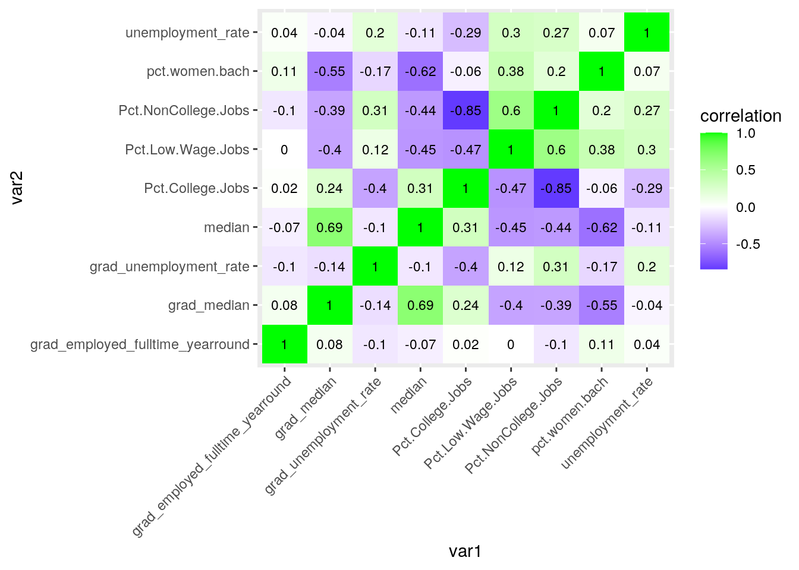
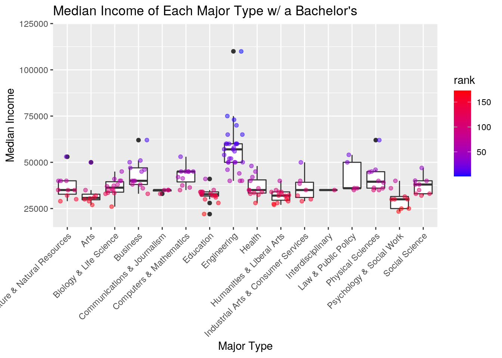
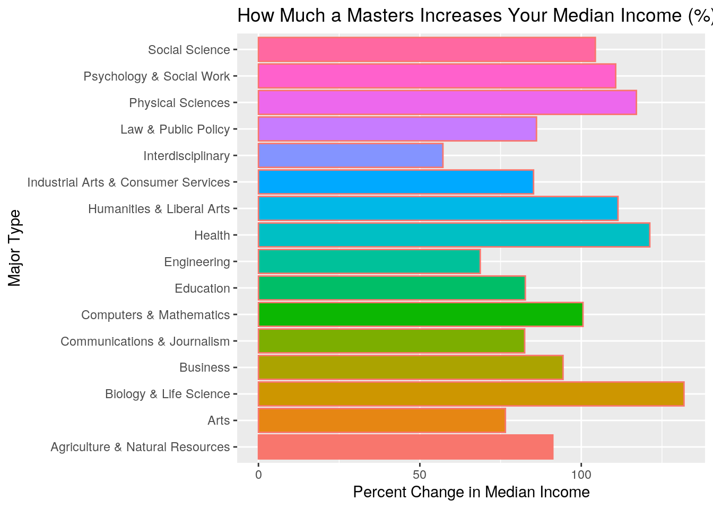
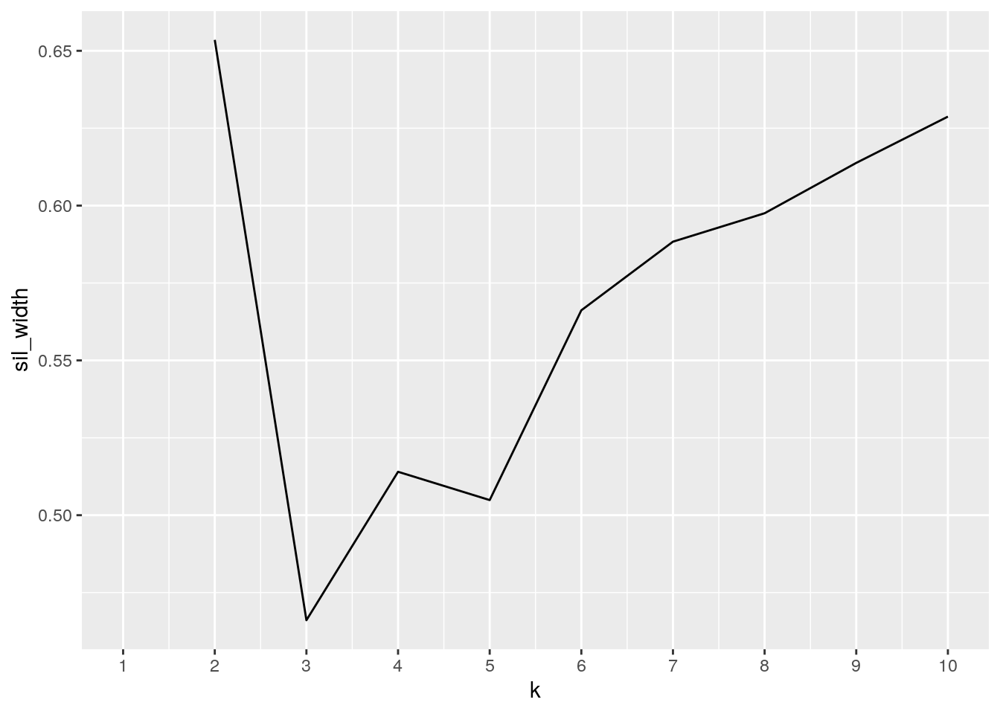
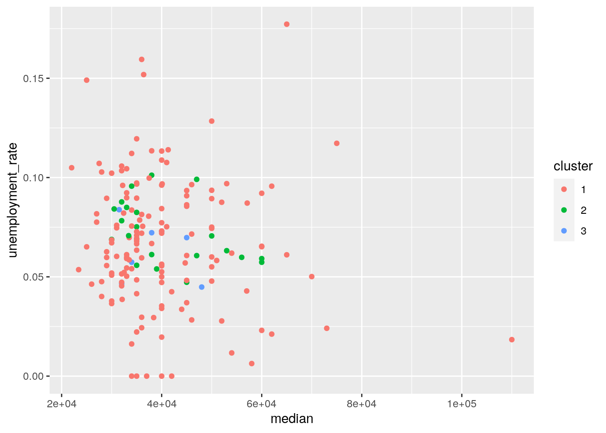
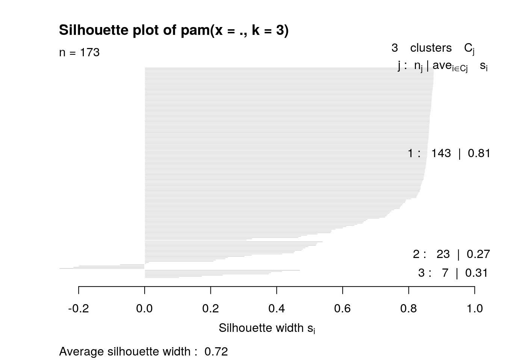

For this project, I chose two datasets, the first being “college_recent_grads” which has data about recent college grads who just earned their Bachelors degrees such as, major, major category, median income, unemployment rate, the amount of men and women polled from each major, the total amount of people polled from each major, whether they are employed full or part-time, and what type of job they have. The second is “college_grad_students” which has data about recent graduate school graduates such as, major, major category, median income, unemployment rate, number of people polled for each major, whether they were employed, and if they were employed full-time or not. I acquired these datasets from fivethirtyeight.com and the article “The Economic Guide To Picking A College Major”. Being a graduating senior, I was interested in the economic aspects of different majors and degree types. Going in, I wanted to see if commonly-held conceptions of major tyes held true and where the numbers strayed from those conceptions, and for the most part they held true, save for a few interesting discoveries.
library(fivethirtyeight)
library(ggplot2)
library(dplyr)
library(tidyverse)
library(cluster)CollegeData <- inner_join(college_recent_grads, college_grad_students)
CollegeData %>% pivot_longer(c("college_jobs", "non_college_jobs",
"low_wage_jobs"), names_to = "Job.Type", values_to = "Number.of.Individuals")## # A tibble: 519 x 39
## rank major_code major major_category total sample_size men women
## <int> <int> <chr> <chr> <int> <int> <int> <int>
## 1 1 2419 Petr… Engineering 2339 36 2057 282
## 2 1 2419 Petr… Engineering 2339 36 2057 282
## 3 1 2419 Petr… Engineering 2339 36 2057 282
## 4 2 2416 Mini… Engineering 756 7 679 77
## 5 2 2416 Mini… Engineering 756 7 679 77
## 6 2 2416 Mini… Engineering 756 7 679 77
## 7 3 2415 Meta… Engineering 856 3 725 131
## 8 3 2415 Meta… Engineering 856 3 725 131
## 9 3 2415 Meta… Engineering 856 3 725 131
## 10 4 2417 Nava… Engineering 1258 16 1123 135
## # … with 509 more rows, and 31 more variables: sharewomen <dbl>,
## # employed <int>, employed_fulltime <int>, employed_parttime <int>,
## # employed_fulltime_yearround <int>, unemployed <int>,
## # unemployment_rate <dbl>, p25th <dbl>, median <dbl>, p75th <dbl>,
## # grad_total <int>, grad_sample_size <int>, grad_employed <int>,
## # grad_employed_fulltime_yearround <int>, grad_unemployed <int>,
## # grad_unemployment_rate <dbl>, grad_p25th <dbl>, grad_median <dbl>,
## # grad_p75th <int>, nongrad_total <int>, nongrad_employed <int>,
## # nongrad_employed_fulltime_yearround <int>, nongrad_unemployed <int>,
## # nongrad_unemployment_rate <dbl>, nongrad_p25th <dbl>, nongrad_median <dbl>,
## # nongrad_p75th <dbl>, grad_share <dbl>, grad_premium <dbl>, Job.Type <chr>,
## # Number.of.Individuals <int>The datasets “college_recent_grads” and “college_grad_students” had 173 observations each. An inner join was used because both datasets have a few variables in common so it was best and easiest to do an inner join because it would drop observations from either dataset that did not have a match in the other, and with full matches that allows me to compare data on a major in both undergraduate and graduate programs. This inner join resulted in the new joined dataset with 173 observations. Then I used the pivot_longer() function to tidy the data and take the three variables of “employed_parttime”, “employed_fulltime”, and “employed_fulltime_yearround” and put them under the new variable “Employment.Type. I then put their values under the new variable”Number.of.Individuals, this action of tidying increased the number of observations to 519. Then, I tidied the data by using the function pivot_longer(), to take the variables “college_jobs”, “non_college_jobs”, “low_wage_jobs” and put them under the new single variable “Job.Type” and took their values and moved them to the other new variable “Number.of.Individuals” which corresponds with "Job.Type
CollegeData <- CollegeData %>% mutate(pct.women.bach = (women/total *
100)) %>% mutate(Pct.College.Jobs = (college_jobs/employed *
100)) %>% mutate(Pct.NonCollege.Jobs = (non_college_jobs/employed *
100)) %>% mutate(Pct.Low.Wage.Jobs = (low_wage_jobs/employed *
100)) %>% mutate(Pct.Change.MedianIncome = ((grad_median -
median)/median * 100))
CollegeData %>% filter(median > mean(median)) %>% slice(1:10)## # A tibble: 10 x 45
## rank major_code major major_category total sample_size men women
## <int> <int> <chr> <chr> <int> <int> <int> <int>
## 1 1 2419 Petr… Engineering 2339 36 2057 282
## 2 2 2416 Mini… Engineering 756 7 679 77
## 3 3 2415 Meta… Engineering 856 3 725 131
## 4 4 2417 Nava… Engineering 1258 16 1123 135
## 5 5 2405 Chem… Engineering 32260 289 21239 11021
## 6 6 2418 Nucl… Engineering 2573 17 2200 373
## 7 7 6202 Actu… Business 3777 51 2110 1667
## 8 8 5001 Astr… Physical Scie… 1792 10 832 960
## 9 9 2414 Mech… Engineering 91227 1029 80320 10907
## 10 10 2408 Elec… Engineering 81527 631 65511 16016
## # … with 37 more variables: sharewomen <dbl>, employed <int>,
## # employed_fulltime <int>, employed_parttime <int>,
## # employed_fulltime_yearround <int>, unemployed <int>,
## # unemployment_rate <dbl>, p25th <dbl>, median <dbl>, p75th <dbl>,
## # college_jobs <int>, non_college_jobs <int>, low_wage_jobs <int>,
## # grad_total <int>, grad_sample_size <int>, grad_employed <int>,
## # grad_employed_fulltime_yearround <int>, grad_unemployed <int>,
## # grad_unemployment_rate <dbl>, grad_p25th <dbl>, grad_median <dbl>,
## # grad_p75th <int>, nongrad_total <int>, nongrad_employed <int>,
## # nongrad_employed_fulltime_yearround <int>, nongrad_unemployed <int>,
## # nongrad_unemployment_rate <dbl>, nongrad_p25th <dbl>, nongrad_median <dbl>,
## # nongrad_p75th <dbl>, grad_share <dbl>, grad_premium <dbl>,
## # pct.women.bach <dbl>, Pct.College.Jobs <dbl>, Pct.NonCollege.Jobs <dbl>,
## # Pct.Low.Wage.Jobs <dbl>, Pct.Change.MedianIncome <dbl>CollegeData %>% select(major_category, unemployment_rate) %>%
group_by(major_category) %>% summarize(Med.Unemployment = median(unemployment_rate,
na.rm = T)) %>% arrange(desc(Med.Unemployment))## # A tibble: 16 x 2
## major_category Med.Unemployment
## <chr> <dbl>
## 1 Social Science 0.0972
## 2 Computers & Mathematics 0.0908
## 3 Arts 0.0895
## 4 Law & Public Policy 0.0825
## 5 Humanities & Liberal Arts 0.0817
## 6 Communications & Journalism 0.0722
## 7 Interdisciplinary 0.0709
## 8 Business 0.0697
## 9 Biology & Life Science 0.0680
## 10 Psychology & Social Work 0.0651
## 11 Health 0.0643
## 12 Engineering 0.0598
## 13 Industrial Arts & Consumer Services 0.0557
## 14 Agriculture & Natural Resources 0.0553
## 15 Physical Sciences 0.0511
## 16 Education 0.0488CollegeData %>% select(major_category, grad_unemployment_rate) %>%
group_by(major_category) %>% summarize(Med.Grad.Unemployment = median(grad_unemployment_rate,
na.rm = T)) %>% arrange(desc(Med.Grad.Unemployment))## # A tibble: 16 x 2
## major_category Med.Grad.Unemployment
## <chr> <dbl>
## 1 Industrial Arts & Consumer Services 0.0545
## 2 Arts 0.0541
## 3 Business 0.0490
## 4 Communications & Journalism 0.0453
## 5 Social Science 0.0453
## 6 Computers & Mathematics 0.0424
## 7 Humanities & Liberal Arts 0.0421
## 8 Law & Public Policy 0.0389
## 9 Psychology & Social Work 0.0376
## 10 Engineering 0.0360
## 11 Agriculture & Natural Resources 0.0304
## 12 Education 0.0275
## 13 Physical Sciences 0.0270
## 14 Biology & Life Science 0.0250
## 15 Health 0.0244
## 16 Interdisciplinary 0.0201CollegeData %>% select(major_category, total, men, women, pct.women.bach) %>%
group_by(major_category) %>% summarize(Mean.Pct.Women = mean(pct.women.bach)) %>%
arrange(desc(Mean.Pct.Women))## # A tibble: 16 x 2
## major_category Mean.Pct.Women
## <chr> <dbl>
## 1 Health 79.5
## 2 Psychology & Social Work 79.4
## 3 Interdisciplinary 77.1
## 4 Education 74.9
## 5 Communications & Journalism 65.8
## 6 Humanities & Liberal Arts 63.2
## 7 Arts 60.4
## 8 Biology & Life Science 58.7
## 9 Social Science 55.4
## 10 Physical Sciences 50.9
## 11 Law & Public Policy 48.4
## 12 Business 48.3
## 13 Industrial Arts & Consumer Services 35.0
## 14 Computers & Mathematics 31.2
## 15 Engineering 23.9
## 16 Agriculture & Natural Resources NACollegeData %>% select(major_category, Pct.College.Jobs) %>%
group_by(major_category) %>% summarize(Mean.Pct.College.Jobs = mean(Pct.College.Jobs)) %>%
arrange(desc(Mean.Pct.College.Jobs))## # A tibble: 16 x 2
## major_category Mean.Pct.College.Jobs
## <chr> <dbl>
## 1 Education 67.4
## 2 Engineering 60.6
## 3 Biology & Life Science 53.5
## 4 Computers & Mathematics 53.4
## 5 Interdisciplinary 52.7
## 6 Physical Sciences 48.8
## 7 Health 48.7
## 8 Psychology & Social Work 46.6
## 9 Agriculture & Natural Resources 33.7
## 10 Humanities & Liberal Arts 33.3
## 11 Social Science 30.5
## 12 Arts 29.2
## 13 Law & Public Policy 27.9
## 14 Communications & Journalism 27.7
## 15 Business 18.9
## 16 Industrial Arts & Consumer Services NaNCollegeData %>% select(major_category, Pct.NonCollege.Jobs) %>%
group_by(major_category) %>% summarize(Mean.Pct.NonCollege.Jobs = mean(Pct.NonCollege.Jobs)) %>%
arrange(desc(Mean.Pct.NonCollege.Jobs))## # A tibble: 16 x 2
## major_category Mean.Pct.NonCollege.Jobs
## <chr> <dbl>
## 1 Arts 59.7
## 2 Law & Public Policy 58.1
## 3 Humanities & Liberal Arts 53.0
## 4 Communications & Journalism 51.4
## 5 Social Science 51.2
## 6 Agriculture & Natural Resources 47.2
## 7 Health 44.3
## 8 Psychology & Social Work 43.9
## 9 Business 43.0
## 10 Physical Sciences 42.6
## 11 Interdisciplinary 39.7
## 12 Biology & Life Science 36.9
## 13 Computers & Mathematics 34.9
## 14 Engineering 27.9
## 15 Education 26.5
## 16 Industrial Arts & Consumer Services NaNCollegeData %>% select(major_category, Pct.Low.Wage.Jobs) %>%
group_by(major_category) %>% summarize(Mean.Pct.Low.Wage.Jobs = mean(Pct.Low.Wage.Jobs)) %>%
arrange(desc(Mean.Pct.Low.Wage.Jobs))## # A tibble: 16 x 2
## major_category Mean.Pct.Low.Wage.Jobs
## <chr> <dbl>
## 1 Arts 22.5
## 2 Humanities & Liberal Arts 17.5
## 3 Social Science 15.0
## 4 Communications & Journalism 14.9
## 5 Law & Public Policy 12.7
## 6 Psychology & Social Work 12.5
## 7 Health 12.3
## 8 Physical Sciences 11.9
## 9 Business 11.1
## 10 Interdisciplinary 10.8
## 11 Biology & Life Science 10.6
## 12 Agriculture & Natural Resources 9.65
## 13 Education 9.42
## 14 Computers & Mathematics 7.47
## 15 Engineering 6.44
## 16 Industrial Arts & Consumer Services NaNLooking at the above data, I was interested in finding the top-10 jobs in terms of median income, the median unemployment rate of each major type (Bachelors), median unemployment of each major type (Masters), the mean percentage of women with degrees of those major types, and the mean percent of individuals with Bachelors degrees that now have a college, non-college, or low-income jobs.
Furthermore, there is good and bad news: the good news is that the top-10 unemployment rates by major type for graduate students are almost half that of the top-10 unemployment rates by major type for those with just a Bachelors, the bad news is that in terms of unemployment rates, 8 of the top-10 major types remain in the top-10 for both Bachelors degrees and Masters degrees. Another statistic of note is that women make up over 50% of people with Bachelors degrees in 10 of the 16 major types, with 3 fields being comprised of over 75% women. Additionally, When looking at the mean percentages of each major type with jobs pertaining to their major, or “College Jobs”, non-college jobs, and low-wage jobs, only 2 fields were in the top half of each job type, both “Health” and “Psychology and Social Work”. This indicates that you are almost equally likely to end up in a job pertaining to your major as not, and their is an above average chance it is low-wage. Lastly, 8 of the top 10 major types in terms of median income are engineers.
CollegeData %>% summarize(Num.of.Major.Categories = n_distinct(major_category),
Num.of.Majors = n_distinct(major), Med.Bach.Unemployment = median(unemployment_rate),
Med.Grad.Unemployment = median(grad_unemployment_rate), SD.Bach.Unemployment = sd(unemployment_rate),
SD.Grad.Unemployment = sd(grad_unemployment_rate), MAD.Grad.Median.Income = mad(grad_median))## # A tibble: 1 x 7
## Num.of.Major.Ca… Num.of.Majors Med.Bach.Unempl… Med.Grad.Unempl…
## <int> <int> <dbl> <dbl>
## 1 16 173 0.0680 0.0367
## # … with 3 more variables: SD.Bach.Unemployment <dbl>,
## # SD.Grad.Unemployment <dbl>, MAD.Grad.Median.Income <dbl>CollegeNum <- CollegeData %>% select_if(is.numeric) %>% select(unemployment_rate,
grad_unemployment_rate, pct.women.bach, Pct.College.Jobs,
Pct.NonCollege.Jobs, Pct.Low.Wage.Jobs, grad_employed_fulltime_yearround,
median, grad_median, ) %>% cor(use = "pair")
CollegeCorr <- CollegeNum %>% as.data.frame %>% rownames_to_column("var1") %>%
pivot_longer(-1, names_to = "var2", values_to = "correlation")
CollegeCorr %>% ggplot(aes(var1, var2, fill = correlation)) +
geom_tile() + scale_fill_gradient2(low = "blue", mid = "white",
high = "green") + geom_text(aes(label = round(correlation,
2)), color = "black", size = 3) + theme(axis.text.x = element_text(angle = 45,
hjust = 1)) The above correlation heatmap displays data showing the correlations between different numeric variables in the joined CollegeData dataset. Some correlations of note are: the very weak correlation between the percentage of women with a bachelors in a major type and the percentage of each major type with jobs pertaining to their major, the relatively strong negative correlation between the percentage of women with a bachelors in a major type and the median income for those with a bachelors degree, and the very weak positive correlation between the unemployment rate of people with a bachelors degree and the median income.
CollegeData %>% ggplot(aes(x = major_category, y = median)) +
xlab("Major Type") + ylab("Median Income") + geom_boxplot() +
geom_jitter(alpha = 0.5, aes(color = rank)) + theme(axis.text.x = element_text(angle = 45,
hjust = 1)) + ylim(20000, 120000) + scale_color_gradient(low = "blue",
high = "red") + ggtitle("Median Income of Each Major Type w/ a Bachelor's") Above is a boxplot graph showing the median incomes (y-axis) of each major type (x-axis) with each major serving as a datapoint and being colored by their rank in terms of median income. Looking at the graph the interesting trends to note are the very concentrated range of median incomes for education majors, communications and journalism majors, and interdisciplinary majors. Conversely, there are wide ranges of median incomes of Law & Public Policy Majors, Engineers, and Business Majors. Additionally, the major type with the highest median income are engineers and the major type with the lowest median income are psychology & social work majors.
CollegeData %>% ggplot(aes(major_category, Pct.Change.MedianIncome)) +
geom_bar(aes(color = "White", fill = major_category), stat = "summary") +
xlab("Major Type") + ylab("Percent Change in Median Income") +
coord_flip() + theme(legend.position = "none") + ggtitle("How Much a Masters Increases Your Median Income (%)") Lastly, we have a bar graph showing the percent change in median income from a bachelors to a masters degree of the same major type. This bar graph essentially shows how much a masters degree benefits a person in terms of income and if it is worth getting it. As seen above, Biology & Life Science majors, Health majors, and Physical Science majors all stand to benefit the most, more than doubling their income when they earn a masters degree. Conversely, Interdisciplinary majors, Engineers, and Arts majors get only a slight boost in income between 50-75% greater.
CollegePam <- CollegeData %>% select(median, unemployment_rate,
pct.women.bach) %>% scale %>% pam(3)
PamData <- CollegeData %>% select(median, unemployment_rate,
pct.women.bach)
sil_width <- vector()
for (i in 2:10) {
pam_fit <- pam(PamData, k = i)
sil_width[i] <- pam_fit$silinfo$avg.width
}
ggplot() + geom_line(aes(x = 1:10, y = sil_width)) + scale_x_continuous(name = "k",
breaks = 1:10)
pam1 <- CollegeData %>% pam(k = 3)
PamCluster <- CollegeData %>% mutate(cluster = as.factor(pam1$clustering))
PamCluster %>% ggplot(aes(median, unemployment_rate, pct.women.bach,
color = cluster)) + geom_point()
PamCluster %>% group_by(cluster) %>% select(median, unemployment_rate,
pct.women.bach) %>% summarize_if(is.numeric, mean, na.rm = T)## # A tibble: 3 x 4
## cluster median unemployment_rate pct.women.bach
## <fct> <dbl> <dbl> <dbl>
## 1 1 40173. 0.0676 51.7
## 2 2 40561. 0.0732 50.3
## 3 3 38357. 0.0639 69.2CollegeData %>% slice(pam1$id.med)## # A tibble: 3 x 45
## rank major_code major major_category total sample_size men women
## <int> <int> <chr> <chr> <int> <int> <int> <int>
## 1 88 3202 Pre-… Law & Public … 13528 92 4435 9093
## 2 125 5507 Soci… Social Science 115433 1024 32510 82923
## 3 41 6201 Acco… Business 198633 2042 94519 104114
## # … with 37 more variables: sharewomen <dbl>, employed <int>,
## # employed_fulltime <int>, employed_parttime <int>,
## # employed_fulltime_yearround <int>, unemployed <int>,
## # unemployment_rate <dbl>, p25th <dbl>, median <dbl>, p75th <dbl>,
## # college_jobs <int>, non_college_jobs <int>, low_wage_jobs <int>,
## # grad_total <int>, grad_sample_size <int>, grad_employed <int>,
## # grad_employed_fulltime_yearround <int>, grad_unemployed <int>,
## # grad_unemployment_rate <dbl>, grad_p25th <dbl>, grad_median <dbl>,
## # grad_p75th <int>, nongrad_total <int>, nongrad_employed <int>,
## # nongrad_employed_fulltime_yearround <int>, nongrad_unemployed <int>,
## # nongrad_unemployment_rate <dbl>, nongrad_p25th <dbl>, nongrad_median <dbl>,
## # nongrad_p75th <dbl>, grad_share <dbl>, grad_premium <dbl>,
## # pct.women.bach <dbl>, Pct.College.Jobs <dbl>, Pct.NonCollege.Jobs <dbl>,
## # Pct.Low.Wage.Jobs <dbl>, Pct.Change.MedianIncome <dbl>plot(pam1, which = 2) Before we get into the PAM clusters and what they mean in regards to the dataset, we have to figure out the k value, or how many clusters to include. Graphing silhouette width vs k we see on the graph that 2 clusters is the best option, but to make the clusters more interesting without losing much in terms of quality a PAM sequence with 3 clusters was chosen. Next, the 3 PAM clusters were plotted. Overall, if you look at just the average silhouette width, it would be easy to just say that there is a strong structure amongst the clusters, but when looking at each cluster individually, you can tell that the average is very much skewed by cluster 1 which has 143 of 173 datapoints for a silhouette width of 0.81. Conversely, clusters 2 and 3 only have 23 and 7 datapoints respectively that each fall under weak structure and could be artificial. After analysis it must be concluded that there is not a good fit amongst the clusters due to this skew of silhouette width by cluster 1.
Note that the echo = FALSE parameter was added to the code chunk to prevent printing of the R code that generated the plot.